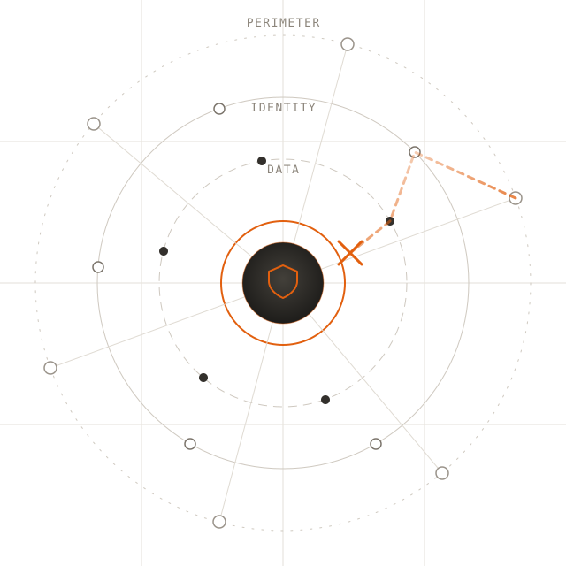
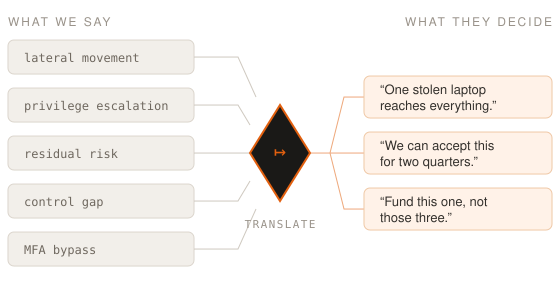
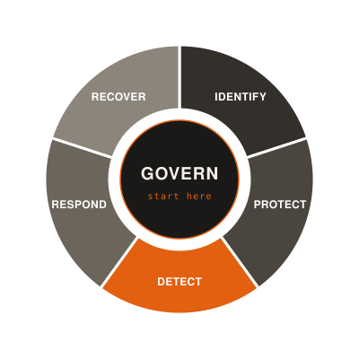
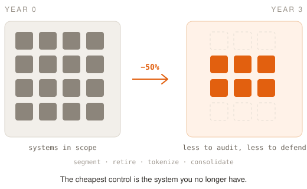
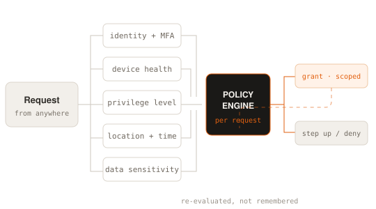
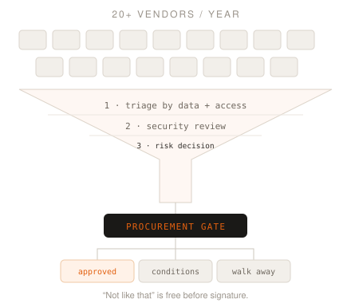
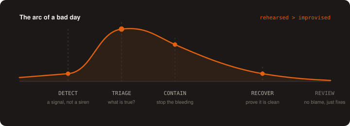
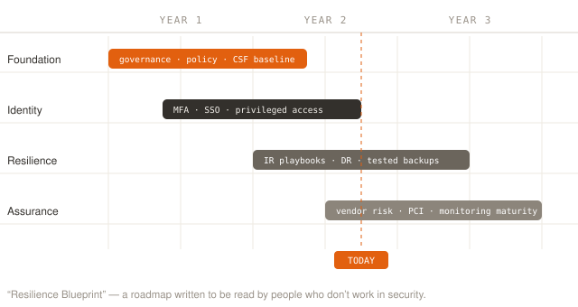
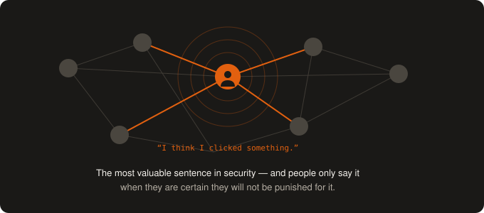
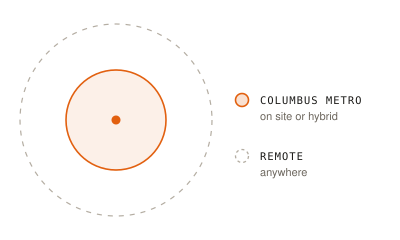

I'm Samuel J. Davis — Director of Information Security and Head of Cybersecurity.
I stood up an enterprise security program from nothing, cut PCI audit scope roughly in half,
and spend most of my day turning frightening technical problems into decisions a
leadership team can actually make.
tip The terminal below is a real conversation — type
help, hire, or just ask a question in plain English.

Interactive
Pull up a chair. Ask me anything.
No form, no autoresponder. Type a command or a plain-English question and you'll get the same
answer I'd give you over coffee. Recruiters: start with hire.
guest@samueljdavis: ~/chat
About
I translate for a living.
Most security failures I've seen weren't sophisticated. They were ordinary — a process nobody
owned, an exception nobody revisited, a warning nobody understood well enough to act on.
Technology rarely fails alone; it fails alongside a sentence somebody didn't say out loud.
So that's the work. I take the thing the engineers are worried about and tell it as a story
the finance team, the board, and the person in the warehouse can all follow — and then I make
sure the story ends with a decision instead of a slide.
I came to security sideways: programmer, architect, web development manager, then senior
manager over network, cloud, and web operations. I earned the CISSP on my own initiative and
used it to start a conversation that eventually became a formal enterprise security program.
Before all of that, I was a Military Police Sergeant and a communications specialist in the
U.S. Army — which is where I learned that a plan nobody has rehearsed isn't a plan.
The programs I'm proud of are the ones that outlast me: understood by the people who have to
live inside them, trusted enough that bad news travels fast, and sustainable enough to survive
a budget cycle and a reorg.
“If I can't explain the risk in one breath, I don't understand it yet.”

The whole job, in one diagram.
How I work
Five convictions I keep proving right.
Every one of these started as an argument I had to win with evidence rather than authority.

Govern first, or the rest is theater
I built our first program on the NIST CSF — not because frameworks are magic, but because
they give a company a shared vocabulary and an honest scorecard. Governance is the boring
function everyone skips and the only one that makes the other five stick.
Program design · Policy · Operating model

Shrink the problem before you defend it
Leading PCI DSS governance and auditor engagement, we cut cardholder scope by about half
over three years. Every system we segmented, retired, or took out of the flow was one we
never had to patch, monitor, audit, or explain again.
PCI DSS · Compliance strategy · Audit engagement

Trust is a verb, checked per request
Identity is the real perimeter now. MFA, SSO, and privileged access management do more for
a mid-sized company's risk profile than any appliance — and they do it without asking
employees to become security experts.
Concretely, that meant taking the minimum password length from 8 characters to 15 and
cutting MFA session trust from 90 days to 7 — roughly thirteen times more revalidation,
and a change almost nobody noticed except an attacker holding a stolen session.
Zero Trust · Identity · MFA/SSO · Cloud security

Your vendors are your attack surface
I put a third-party and SaaS review in front of procurement, not behind it — 20+ vendors a
year, assessed on the data and access they'd actually get. Saying “not like that” before a
contract is signed costs nothing. Afterward it costs everything.
Vendor risk · SaaS governance · Procurement
If you don't know you have it, you can't protect it
Every framework opens with an inventory, and nearly every organization I've walked into has
one that stopped being true years ago. You cannot patch, monitor, retire, or defend a system
nobody wrote down — and the ones nobody wrote down are precisely where the trouble starts.
So I treat knowing what you own as a control in its own right, not as paperwork that
precedes the real work. Lifecycle tracking that matches reality, procurement and onboarding
wired together so a thing is known the day it arrives, and offboarding that genuinely closes
the door behind it. It is the least glamorous work in security and the foundation every
other control stands on.
Everyone has a plan until the phone rings at 5:00 p.m. on a Friday.
You learn this the first time it happens to you, and every incident since has re-taught it:
calm on the bad day is manufactured in advance, out of rehearsal, clear roles, and permission
to speak up early. So we rehearse it — most recently in a facilitated tabletop that put the
plan under real pressure and handed back a short, unflattering list of things to fix.

Roles before rules. Who decides, who talks, who touches the keyboard — settled while it's quiet.
Communicate up early. Executives forgive bad news. They don't forgive late news.
Blameless review, real fixes. A postmortem that produces a scapegoat produces nothing else.
PCI DSS
The cheapest control is the system you no longer have.
Compliance is a floor, not a ceiling — but it's a floor that arrives with budget attached,
and a security leader who won't use that leverage is leaving money on the table. I led PCI DSS
governance and auditor engagement, and the number I care about isn't the passing grade. It's
that cardholder scope came down by roughly half over three years, and stayed down.
Shrink it before you defend it. Every system we segmented, retired, or lifted out of the cardholder flow is one nobody has to patch, monitor, assess, or explain again.
Treat the auditor as an engineer. Show your working and argue scope on the evidence. The relationship outlasts any single certificate.
Compounding, not annual. A smaller environment doesn't just make one audit cheaper. It makes every audit after it cheaper, and shrinks the blast radius on the way.
Experience
Twenty-plus years of building the thing, then securing it.
Apr 2023 — Present
Director of Information Security / Head of Cybersecurity
Highlights for Children, Inc. · Columbus, OH
Established and lead the enterprise Information Security function with full accountability
for strategy, governance, risk, and incident response across corporate, cloud, and
application environments — as the organization's sole dedicated security resource. Senior-most
authority on cyber risk, reporting posture and recommendations directly to executive leadership.
Program strategy: built the organization's first formal cybersecurity program — governance, operating model, and a multi-year strategy aligned to NIST CSF 2.0.
Executive advisory: advise leadership on risk acceptance, prioritization, and where the security dollar actually goes.
Compliance optimization: led PCI DSS governance and auditor engagement, cutting scope ~50% and reducing audit burden and long-term cost.
Identity hardening: raised the enterprise minimum password length from 8 to 15 characters and cut MFA session trust from 90 days to 7, increasing identity revalidation roughly thirteenfold.
Distributed ownership: launched a cross-functional Security Task Force with liaisons on every IT team, turning vulnerability remediation from centralized chasing into owned accountability.
Audit leadership: led the annual PCI DSS compliance effort and coordinated a finance-sponsored IT audit, working directly with external auditors on control evidence.
Detection maturity: expanded SIEM visibility with network telemetry feeding 24/7 monitoring, and ran a facilitated tabletop to pressure-test incident response.
Emerging tech governance: formalized a structured software approval process and shaped early policy guidance for AI adoption.
Risk integration: stood up a formal third-party/SaaS risk program, embedding security review into procurement.
Strategic planning: authored the “Resilience Blueprint” multi-year roadmap aligning progress, constraints, and resourcing to business priorities.
Jun 2017 — Apr 2023
Senior Manager, Network Services
Highlights for Children, Inc. · Columbus, OH
Senior operations leader over enterprise network, cloud (Azure), and web platforms —
accountable for uptime, resilience, and team performance across business-critical and
customer-facing systems.
Directed multidisciplinary network, cloud, and web operations teams.
Partnered with application, product, and business teams to deliver infrastructure for growth.
Developed engineers, drove operational consistency, and prioritized ruthlessly.
Earned the CISSP independently and used it to influence the creation of a formal security program.
Earlier career
Web Development Manager · Applications & Solutions Architect · Senior Applications Programmer · Programmer / Analyst
Progressively responsible technology roles spanning application development, systems
architecture, physical security, enterprise platforms, vendor coordination, and delivery in
complex organizations. I've been the person on the other end of the security requirement,
which is precisely why mine are written to be implementable.

Security programs mature in roughly this order — you can't do assurance on a foundation that isn't there yet. The years are sequence, not schedule.
Security culture
The best control I've ever deployed was psychological safety.
You can buy detection. You cannot buy the four seconds in which an employee decides whether to
tell you they clicked the link. That decision is made long before the incident, based on how
the last person who admitted a mistake was treated.
So I run awareness like storytelling, not compliance homework: short, specific, human, and
occasionally funny. I'd rather someone remember one story about a fake invoice than pass a
quiz they'll forget by Thursday.
Last year that meant five sessions — HR, Finance, IT, the steering committee, and the whole
company — and several of them were requested by business leaders rather than scheduled by me.
That is the only attendance metric I actually trust.
And none of it stays at work. The person who learns to spot a fake invoice on Tuesday is the
same person who spots the text about their bank on Saturday. I teach it that way on purpose —
security that only works between nine and five was never really understood.
It shows up in the numbers eventually. It shows up in the hallway first.

Education
B.S., Computer Information Systems DeVry University — Columbus, OH
U.S. Army & Army Reserve Military Police Sergeant · Communications Specialist
Frameworks
NIST CSF · PCI DSS · Zero Trust · Business continuity & disaster recovery
Contact
Let's talk.
I'm open to security leadership roles across the Columbus metro or fully remote, and to
fractional and advisory work. If you're standing up a program and want an outside read on it,
or you need someone who can explain risk to a room that doesn't work in security, write to me.
I'd rather tell you something useful than something polite.

Prefer the keyboard? Type contact in the terminal.